rasterVis
Table of Contents
Introduction
The rasterVis package complements the raster package, providing a
set of methods for enhanced visualization and interaction.
It defines visualization methods for quantitative data and categorical
data, with levelplot, both for univariate and multivariate rasters.
It also includes several methods in the frame of the Exploratory Data
Analysis approach: scatterplots with xyplot, histograms and density
plots with histogram and densityplot, violin and boxplots with
bwplot, and a matrix of scatterplots with splom.
On the other hand, rasterVis provides three methods to display
spatiotemporal rasters: hovmoller produces Hovmöller diagrams,
horizonplot creates horizon graphs, with many time series displayed
in parallel, and xyplot displays conventional time series plots
extracted from a multilayer raster.
Finally, this package is able to display vector fields using arrows,
vectorplot, or with streamlines, streamplot.
This webpage illustrates some its functionalities with examples. If you need more information, you may be interested in my book “Displaying Time Series, Spatial, and Space-Time Data with R”. It includes four chapters devoted to the visualization of spatial and spatiotemporal raster data. Along with the main graphics from the text, its website offers access to the datasets used in the examples as well as the full R code.
Installation
The stable release of rasterVis can be found at CRAN. The
development version is at GitHub.
Install the stable version with:
install.packages('rasterVis')
To install the development version you need the devtools package:
install.packages('devtools') devtools::install_github('rasterVis', 'oscarperpinan')
Level plots
This section discusses how to display quantitative data with
levelplot with an example using data from the CM SAF project, as
described here.
library(raster) library(rasterVis) ##Solar irradiation data from CMSAF setwd(tempdir()) download.file('https://raw.github.com/oscarperpinan/spacetime-vis/master/data/SISmm2008_CMSAF.zip', 'SISmm2008_CMSAF.zip', method='wget') unzip('SISmm2008_CMSAF.zip') listFich <- dir(pattern='\.nc') stackSIS <- stack(listFich) stackSIS <- stackSIS*24 ##from irradiance (W/m2) to irradiation Wh/m2 idx <- seq(as.Date('2008-01-15'), as.Date('2008-12-15'), 'month') SISmm <- setZ(stackSIS, idx) names(SISmm) <- month.abb
Once the Rasterstack has been defined, it can be displayed easily
with levelplot. Each panel of the graphic shows a layer of the
RasterStack object using a trellis chart or small-multiple
technique.
levelplot(SISmm)

If only one layer is chosen, this method displays two marginal plots,
the row and column summaries of the RasterLayer, computed with the
function defined by the component FUN of the list margin (which uses mean as default value):
levelplot(SISmm, layers=1, margin = list(FUN = 'median'), contour=TRUE)

The result of this call is a trellis object. The latticeExtra package
provides the layer function to add contents. For example, let’s add the administrative borders.
This information is available at the GADM service.
library(maptools) proj <- CRS('+proj=longlat +ellps=WGS84') ##Change to your folder mapaSHP <- readShapeLines('~/Datos/ESP_adm/ESP_adm2.shp', proj4string=proj) p <- levelplot(SISmm, layers=1, margin = list(FUN = median)) p + layer(sp.lines(mapaSHP, lwd=0.8, col='darkgray'))

Log scale
The zscaleLog argument controls whether the object will be log
transformed before being passed to the panel function. Defaults to
‘NULL’, in which case the Raster* is not transformed. Other possible
values are any number that works as a base for taking logarithm,
‘TRUE’ (which is equivalent to 10), and ‘"e”’ (for the natural
logarithm). As a side effect, the colorkey is labeled differently.
f <- system.file("external/test.grd", package="raster") r <- raster(f) levelplot(r^2, zscaleLog=TRUE, contour=TRUE)

Themes
The previous plots used the default theme of rasterVis,
rasterTheme. This theme defines a sequential palette with yellow,
orange and red. There are three more themes in rasterVis: GrTheme
(with a grey palette), BTCTheme (defined with the BTC palette of
the hexbin package) and RdBuTheme (with a diverging palette with
red and blue).
The irradiation of August is:
Aug <- raster(SISmm, 8)
and its overall mean is calculated with cellStats:
meanAug <- cellStats(Aug, mean)
The diverging palette is specially well suited to this data:
levelplot(Aug-meanAug, par.settings=RdBuTheme)

Besides, it is easy to define a new theme with a different palette. For example, using a sequential palette from colorspace:
library(colorspace) myTheme=rasterTheme(region=sequential_hcl(10, power=2.2)) levelplot(Aug, par.settings=myTheme, contour=TRUE)
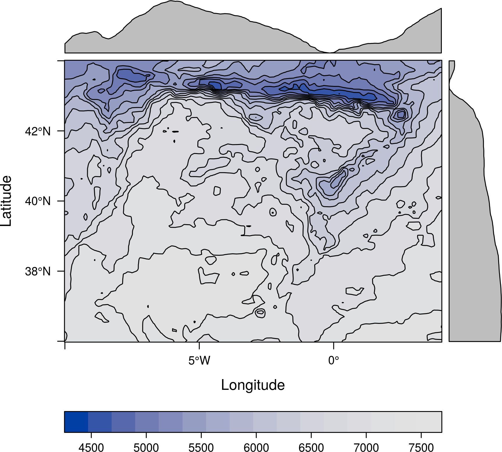
or with the colour-blindness corrections from the dichromat package:
library(dichromat) myTheme <- rasterTheme(region=dichromat(terrain.colors(15))) levelplot(Aug, par.settings=myTheme)

Categorical data
A raster that contains categorical data can be defined with the ratify function.
r <- raster(nrow=10, ncol=10) r[] = 1 r[51:100] = 3 r[3:6, 1:5] = 5 r <- ratify(r)
The levels are stored in the “Raster Attribute Table” (RAT) that can be manipulated with the levels function:
rat <- levels(r)[[1]] rat$landcover <- c('Pine', 'Oak', 'Meadow') rat$class <- c('A1', 'B2', 'C3') levels(r) <- rat
Such type of rasters are easily displayed with levelplot:
levelplot(r, col.regions=c('palegreen', 'midnightblue', 'indianred1'))
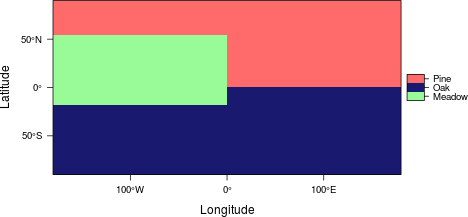
There is the att argument to choose the variable (column) from the RAT:
levelplot(r, att='class', col.regions=c('palegreen', 'midnightblue', 'indianred1'))
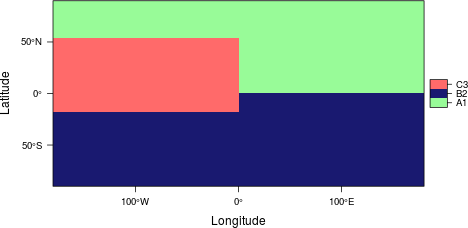
Scatterplots and histograms
There are methods to show scatter plots and hexbin plots of the layers
and coordinates of a Raster object:
##Relation between the January & February versus July radiation for four ##differents longitude regions. xyplot(Jan+Feb~Jul|cut(x, 4), data=SISmm, auto.key=list(space='right'))
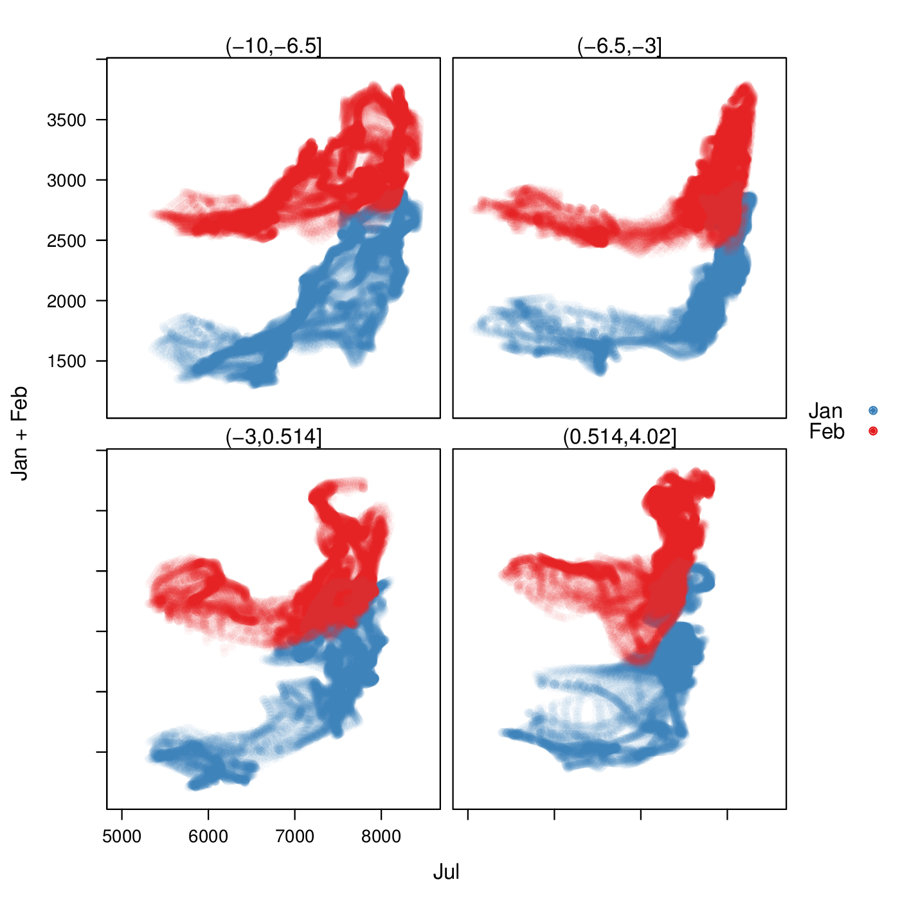
##Faster with hexbinplot hexbinplot(Jan~Jul|cut(x, 6), data=SISmm)
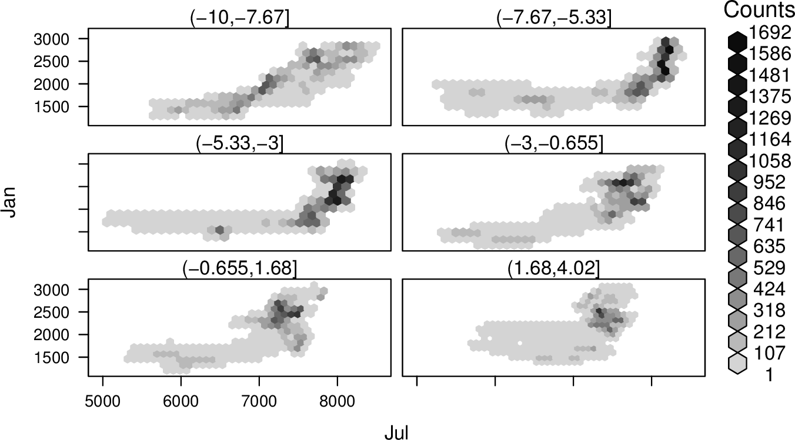
…a method for scatter plot matrices:
splom(SISmm)

..and methods for histograms, box-and-whisker and violin plots or density estimates:
histogram(SISmm)
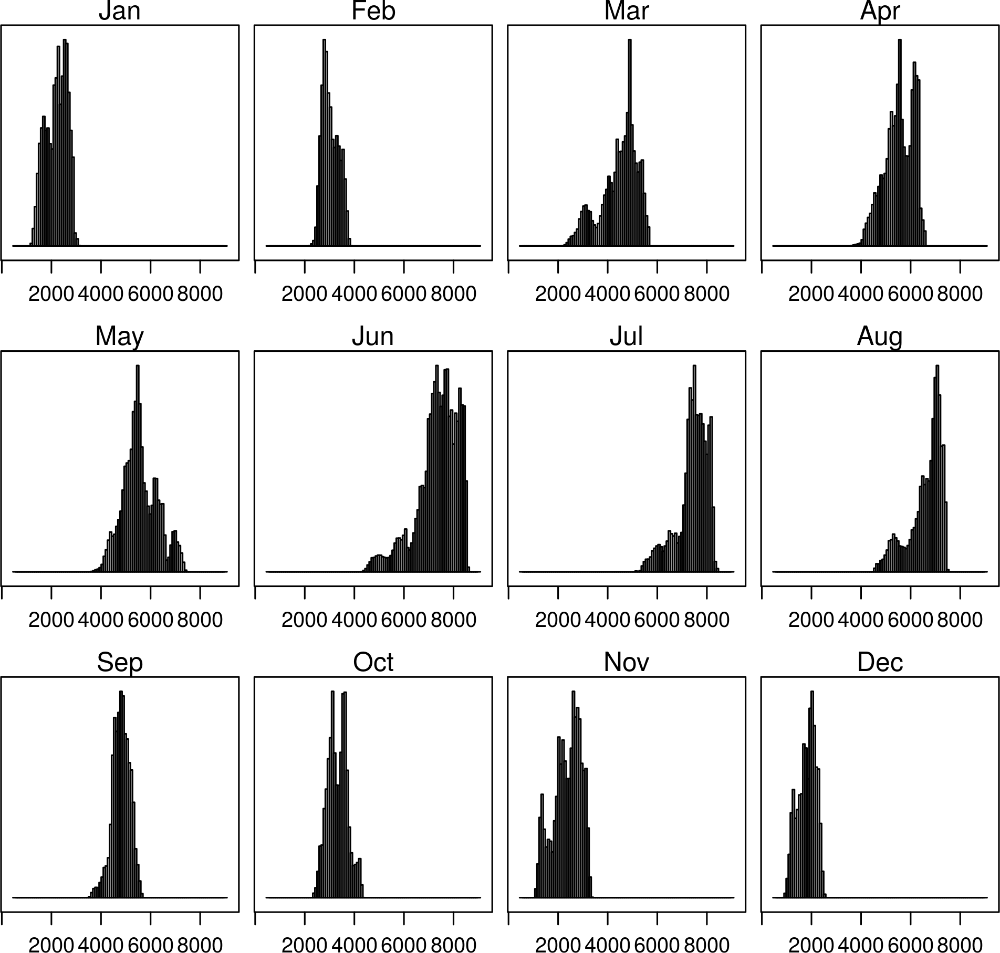
densityplot(SISmm)
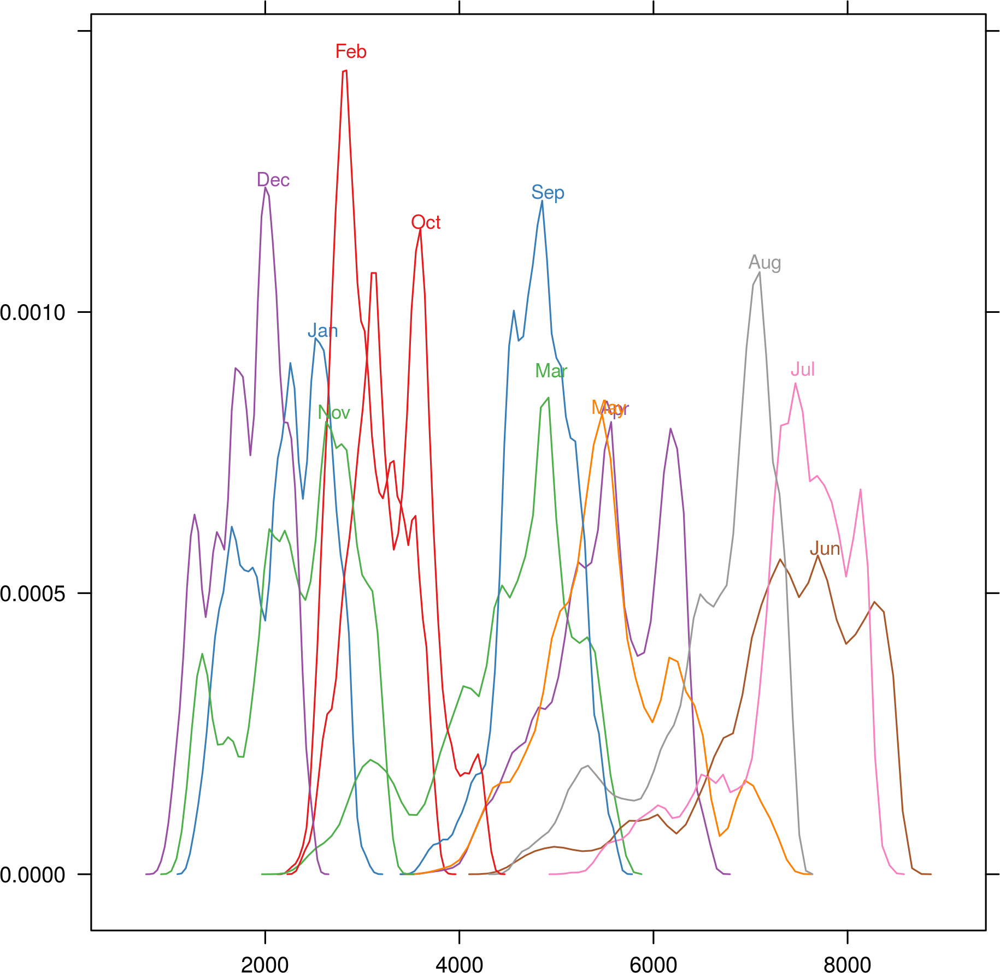
bwplot(SISmm)
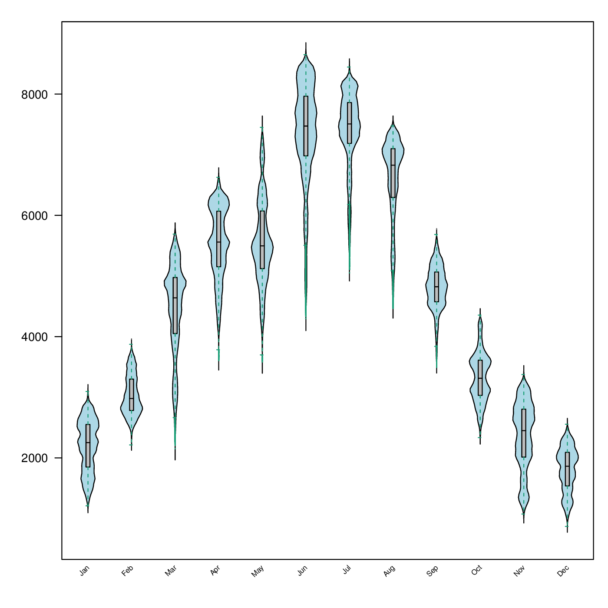
These methods accept a FUN argument to be applied to the z slot of
the Raster object. The result of this function is used as the grouping
variable of the plot:
histogram(SISmm, FUN=as.yearqtr)
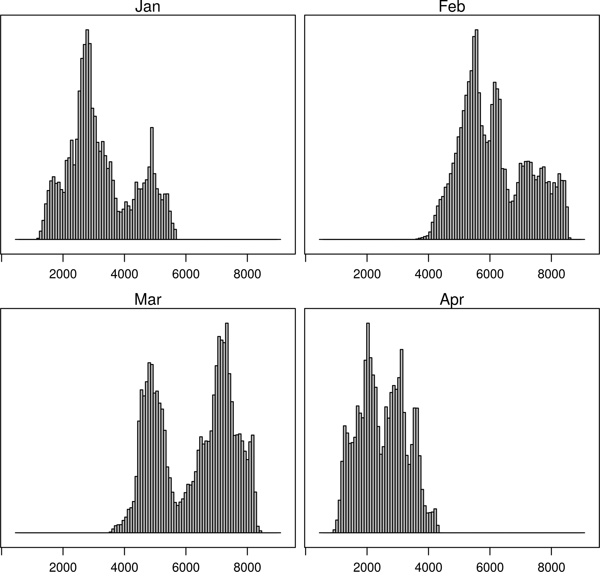
Space-time plots
The z slot of this Raster object stores a time index. This 3D
space-time Raster object can be displayed with a hovmoller diagram.
The hovmoller method uses the function xyLayer, which creates a
RasterLayer from a function of the coordinates.
f <- system.file("external/test.grd", package="raster") r <- raster(f) dirXY <-xyLayer(r, sqrt(x^2 + y^2)) dirXY
For example, the next code builds a hovmoller diagram showing the time evolution of the anomalies of Sea Surface Temperature data available from the Climate Analysis Center (more information here):
library(zoo) old <- setwd(tempdir()) download.file('http://iridl.ldeo.columbia.edu/SOURCES/.CAC/.sst/data.nc', destfile = 'SST.nc') SST <- stack('SST.nc') idx <- seq(as.Date('1970-01-01'), as.Date('2003-03-01'), by='month') tt <- as.yearmon(idx) SST <- setZ(SST, tt) names(SST) <- as.character(tt) ## Extract month value from a Date or yearmon object month <- function(x)format(x, '%m') ## Compute anomaly using monthly grouping with ave anomaly <- function(x){ ## Monthly means mm <- ave(x, month(tt), FUN = mean) ## Monthly standard deviation msd <- ave(x, month(tt), FUN = sd) ## anomaly (x - mm)/msd } ## Use anomaly with calc SSTanom <- calc(SST, anomaly) SSTanom <- setZ(SSTanom, tt) setwd(old)
## Ok, let's see the result hovmoller(SSTanom, at = seq(-3, 3, .25), panel = panel.levelplot.raster, interpolate = TRUE, yscale.components = yscale.raster.subticks, par.settings = BuRdTheme)
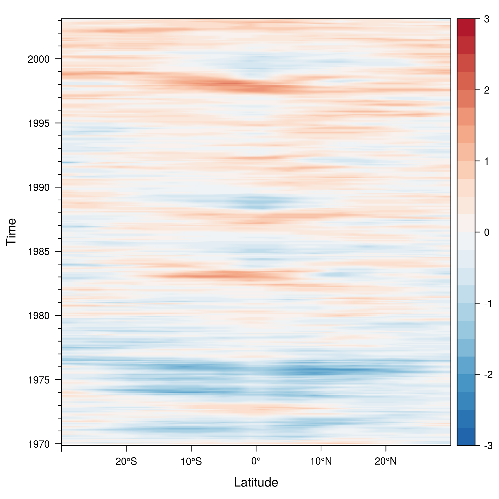
The horizonplot and xyplot methods also are useful for the space-time Raster objects:
horizonplot(SSTanom,
col.regions = rev(brewer.pal(n = 10, 'RdBu')))
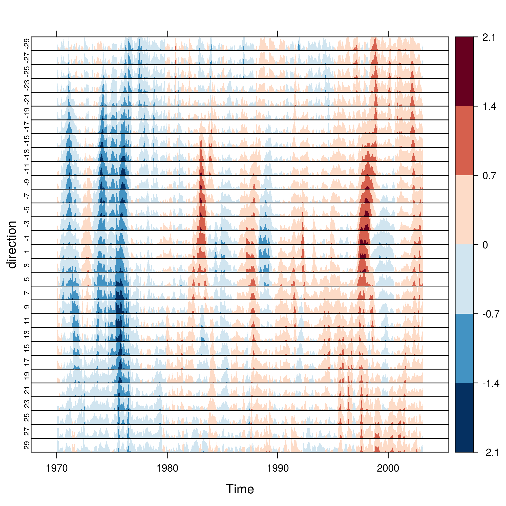
Vector field plots
The function terrain from raster provides the vector field
(gradient) from a scalar field stored in a RasterLayer object. The
magnitude (slope) and direction (aspect) of the vector field is
usually displayed with a set of arrows (e.g. quiver in Matlab).
rasterVis includes a method, vectorplot, to calculate and display
this vector field.
proj <- CRS('+proj=longlat +datum=WGS84') df <- expand.grid(x=seq(-2, 2, .01), y=seq(-2, 2, .01)) df$z <- with(df, (3*x^2 + y)*exp(-x^2-y^2)) r <- rasterFromXYZ(df, crs=proj)
vectorplot(r, par.settings=RdBuTheme())
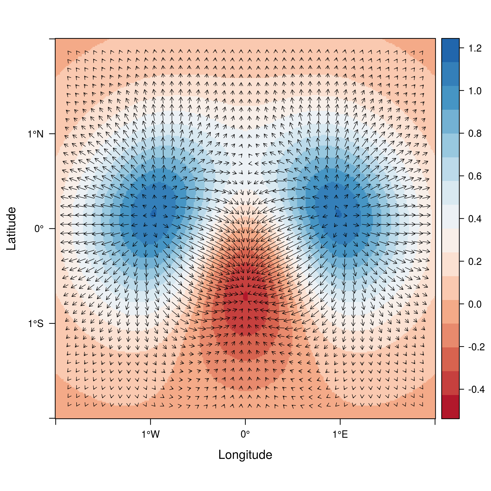
If the Raster* object passed to vectorplot is a
vector field (isField=TRUE), the terrain calculation is
skipped.
An alternative method to display a vector field plots streamlines
along the field lines. Streamlines, a family of curves that are
tangent to the vector field, show the direction an element
(droplet) will follow under the effect of the field.
streamplot displays streamlines with a procedure inspired
by the FROLIC algorithm: for each point
(droplet) of a jittered regular grid, a short streamline
portion (streamlet) is calculated by integrating the
underlying vector field at that point. The main color of each
streamlet indicates local vector magnitude
(slope). Besides, streamlets are composed of points whose sizes,
positions and color degradation encode the local vector direction
(aspect).
streamplot(r)

streamplot accepts two arguments (droplets and streamlets)
to control the number of droplets, the length of the streamlets
and the streamlet calculation step. The streamlet colour
palette and the panel background color are defined with an
specific theme for streamplot, streamTheme. The default
options can be changed easily:
df$z <- with(df, sqrt(x^2 + y^2)) df$phi <- with(df, atan2(-y, x)) r2 <- rasterFromXYZ(df, crs=proj) streamplot(r2, isField=TRUE, streamlet=list(L=30), droplet=list(pc=.3), par.settings=streamTheme(symbol=brewer.pal(n=5, name='Reds')))
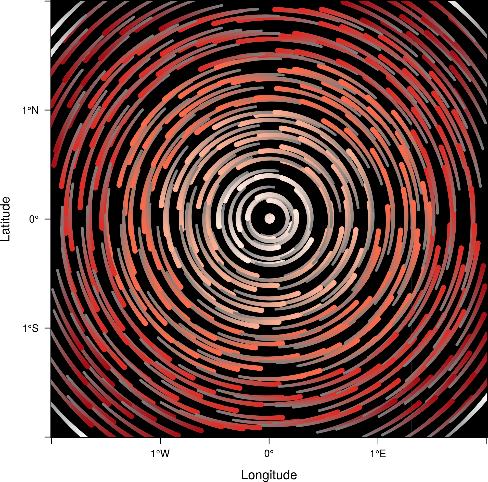
Interaction
This package includes two functions to interact with the trellis objects.
The identifyRaster method labels and returns points of a trellis graphic
according to mouse clicks. It is commonly used after levelplot,
although it can be also used after xyplot, hexbinplot or even splom:
levelplot(SISmm) ## Do not close the last graphical window. Use the left button of the ## mouse to identify points and the right button to finish chosen <- identifyRaster(SISmm, layer=3, values=TRUE)
The chooseRegion function provides a set of points (in the form of a
SpatialPoints object) inside a region defined by several mouse
clicks. Use the left button of the mouse to build a border with points, and
the right button to finish. The points enclosed by the border will
be highlighted and returned as a SpatialPoints object.
reg <- chooseRegion()